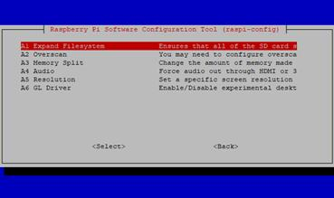
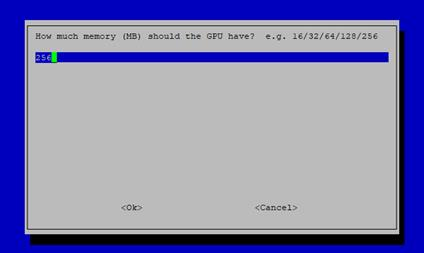
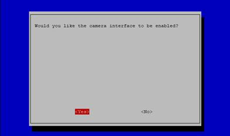
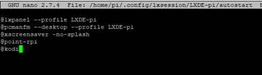

Installing Samba to Mount Windows Shares on Start-up
First create local administrator account on shared machine (user/passwd). Share under this account and use this name and password in kodi
sudo apt-get install -y samba samba-common-bin smbclient cifs-utils
sudo nano /etc/fstab
add to this file:
//LOUNGE-PC/tv /media/tv cifs user=user,password=passwd,x-systemd.automount 0 0
//LOUNGE-PC/Movies /media/movies cifs user= user,password= passwd,x-systemd.automount 0 0
Installing Kodi
Before you install Kodi, you’ll need to ensure your Pi is set up correctly. Three things need to be changed:
· Expanding file system (this should happen automatically when booting Stretch for the first time)
· Altering memory split
· Enabling video codecs
Additionally, you’ll need to ensure Broadcom desktop drivers are set.
All three of these things can be done using raspi-config. You can access this on the desktop via Preferences > Raspberry Pi Configuration, or in the command line:
sudo raspi-config
Expanding the Filesystem

If you haven’t already expanded the filesystem, and it didn’t happen automatically when you booted (which gives your Pi more space to run software), you should do so now.
This will improve overall performance of your Kodi box, as there will be more space on the microSD card for installing add-ons and caching data. (By default, Raspbian installs into a partition that is smaller than the microSD card.)
To take full advantage of your microSD card’s capacity, open raspi-config and select the first option, Expand Filesystem. Select OK to confirm your choice, and follow the instructions to restart your Raspberry Pi.
Altering Memory Split

Next, you’ll need to change the memory split. Kodi on the Raspberry Pi 2 or Raspberry Pi 3 requires 256MB dedicated to the GPU to run correctly.
Again, run raspi-config, then go to Advanced Options > Memory Split and set the split to 256MB.
Enabling Video Codecs

Finally, you need to enable certain video codecs that don’t run as standard. These include VP6, VP8, MJPEG, and Theora, among others. To do this, you need to enable the camera. While no camera needs to be connected, enabling this feature will ensure the codecs can be used.
Do this via Interfacing Options > Camera > Yes. Confirm with OK. Note that you can also effect this change via the config.txt file. Found in the /boot/ directory on your Raspberry Pi’s microSD card, this is the only directory that can be read in Windows.
To do it this way, open config.txt on your desktop computer and add:
start_x=1
Save the file, exit, and safely eject your microSD card before replacing in the Raspberry Pi and rebooting.
Setting the Right Desktop Driver
The last pre-install change you need to make is to the desktop driver. Kodi will not function if you’re not using the Broadcom drivers for your Raspberry Pi’s display. As such, you’ll need to ensure the default driver is set.
In raspi-config, select Advanced Options > GL Driver and set Original non-GL desktop driver. Select OK to confirm, and reboot again if prompted.
Installing Kodi on Raspbian Stretch
To get Kodi running on Raspbian, you’ll need to begin with the basics. First, update packages, then check for updates:
sudo apt update
sudo apt upgrade
Once these updates are complete, you’re ready to install Kodi:
sudo apt install kodi
However, there’s a bit more to it than that. Installing Kodi is only part of the challenge, as you’ll also need to configure it slightly. This is likely to work best on Raspbian, although this is by no means the only OS you can use.
Meanwhile, to instruct Kodi to launch when you switch on your Raspberry Pi, you’ll need to edit the autostart file via SSH (how to do that) or the command line on your Pi:
sudo nano ~/.config/lxsession/LXDE-pi/autostart
Here, add a line to the end:
@kodi

Then, save the file and exit with Ctrl + X. When you next reboot your Raspberry Pi, it should boot straight into Kodi. Exiting Kodi, meanwhile, will let you back into the Raspbian desktop!